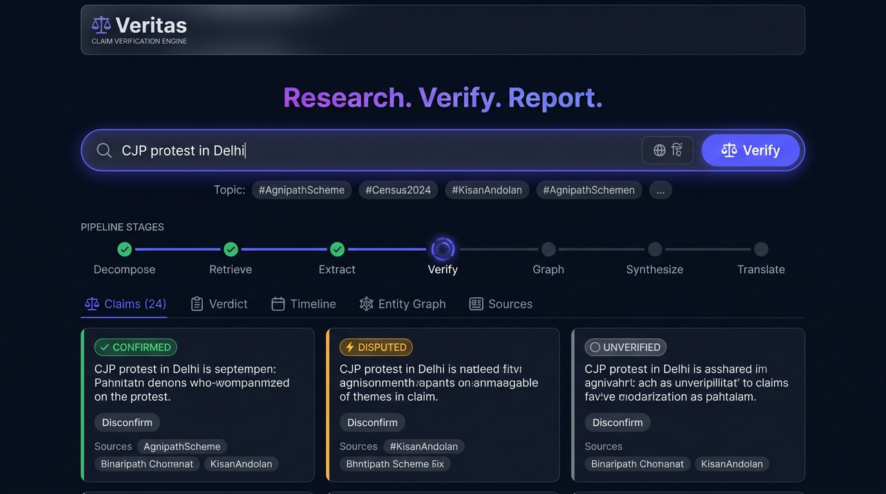
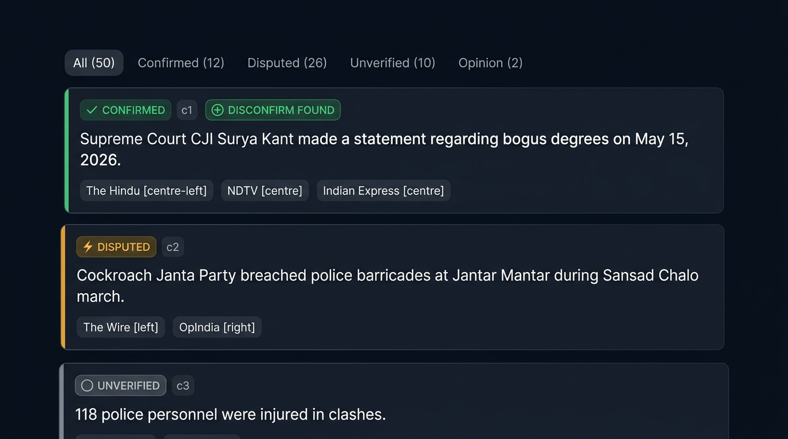
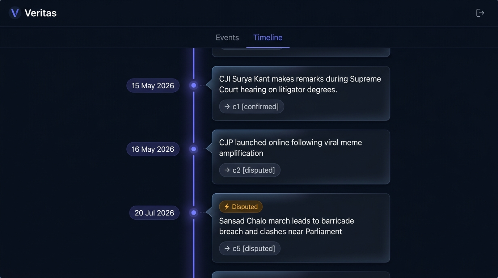
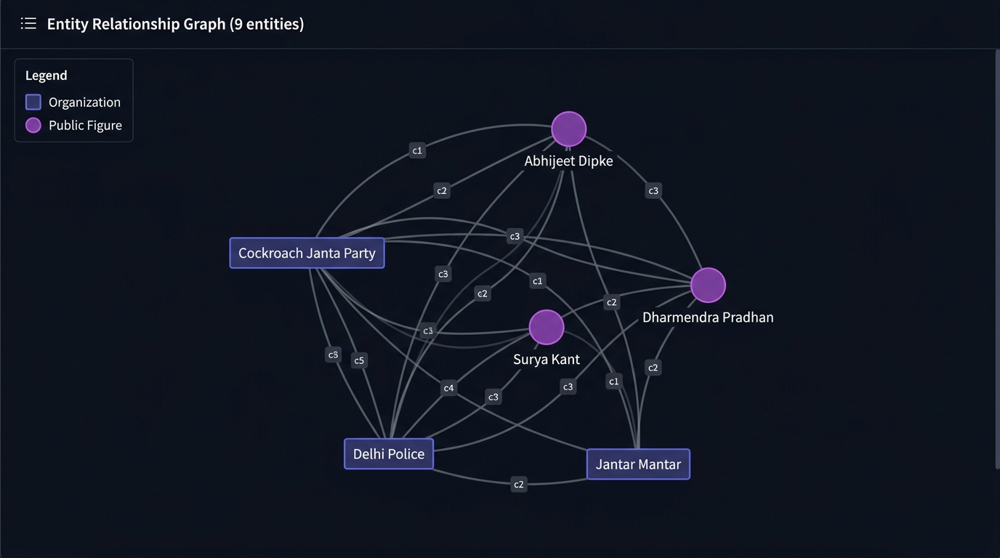

Why Traditional RAG Fails on Socio-Political Disputes
In high-stakes socio-political reporting, traditional Retrieval-Augmented Generation (RAG) suffers from a fatal flaw: confirmation bias propagation. Standard RAG pipelines retrieve top-k vector matches and immediately prompt an LLM to synthesize an answer. When fed polarising news, standard RAG defaults to repeating whichever outlet's narrative dominated the top search results.
In socio-political discourse, news outlets frequently conflate factual reporting with editorial interpretation, infer unevidenced motives ("politically motivated", "secret ambitions"), and publish single-source allegations as established facts. If an AI research engine is instructed to "summarize the news", it inevitably absorbs and regurgitates these editorial biases.
"Conclusions are only ever an output of the verification stage computed from graded claims — never an instruction. The engine reports what named actors said and did on record. It never infers psychological intent or righteousness."
Veritas was built from the ground up to solve this system failure. Instead of jumping from prompt to summary, Veritas forces every input query through a strict 7-stage evidence-grading pipeline.
The Five Core Guardrail Principles
Before writing a single prompt or line of orchestration code, we established five non-negotiable architectural guardrails that govern the entire system:
Never merge them into one paragraph. Every claim must carry its primary source, the outlet's stance (reports as fact | disputes | alleges | opinion), and an evidence grade computed from multi-outlet cross-verification.
When a claim is extracted from Source A, the engine executes a targeted disconfirm search (e.g. claim_text -site:sourceA.com "disputed OR refuted"). If no opposing source is found, the engine explicitly flags a Disconfirm Gap and never treats absence of disagreement as automatic confirmation.
Every entity — protesters, organizers, police, government, media — is evaluated with the exact same rigor. The system reports on-record statements only. Terms like "hidden agenda", "brand-building", or "secretly wants" are strictly audited and filtered out.
Only public figures, official spokespersons, and registered organizations get profiled. Private citizens present at an event are strictly filtered out to prevent targeted profiling.
Reasoning, extraction, and verification occur exclusively in English to maintain semantic precision. Translation (e.g. into Hindi) occurs strictly as a post-processing pass on the completed report.
The 7-Stage LangGraph Engine
Veritas uses a stateful LangGraph StateGraph threading a single ResearchState object across 7 isolated nodes. Stage failures yield partial reports rather than pipeline crashes.
Multi-Outlet Triangulation & Grading Matrix
How does Veritas determine whether a claim is 🟢 Confirmed, 🟡 Disputed, ⚪ Unverified, or 🟣 Opinion? It evaluates the editorial lean spectrum of every reporting outlet.
ELSE IF (FactSources ≥ 2 && IsDiverseLeans(FactSources)) → CONFIRMED
ELSE IF (SourceStance == 'opinion') → OPINION
ELSE → UNVERIFIED
A claim is only graded as Confirmed if it is reported as fact by at least two independent outlets spanning different editorial lean brackets (e.g. Left + Right, or International + Neutral). Ten outlets within the exact same lean bracket repeating the same press release will never trigger a Confirmed grade.
Real-Time Pipeline Telemetry
Veritas exposes a POST /api/research endpoint that streams Server-Sent Events (SSE). The React frontend renders live progress as each stage completes:
Resilient Two-Tier LLM Architecture
To prevent rate-limit bottlenecks on Groq's free tier (12,000 TPM on Llama 70B), Veritas routes high-volume extraction calls to Llama 3.1 8B Instant (60,000 TPM) and reserves Llama 3.3 70B strictly for Stage 6 synthesis. If Groq rate limits, it falls back instantly to the Google GenAI SDK across multiple Gemini models:
Visual Interface Gallery



